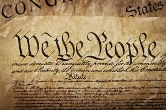

THE NEW AMERICAN INDEPENT POLITICAL PARTY OF THE UNITED STATES
Why a new party?
Why our current party system is broken?
How will a new party help fix this?
Find out more here.
Click here
What is this new party?
How is this party different from others?
What does this party believe in?
Find out more here.
Click here

How
is this party organized?
Who runs the party?
Find out more here/
Click here